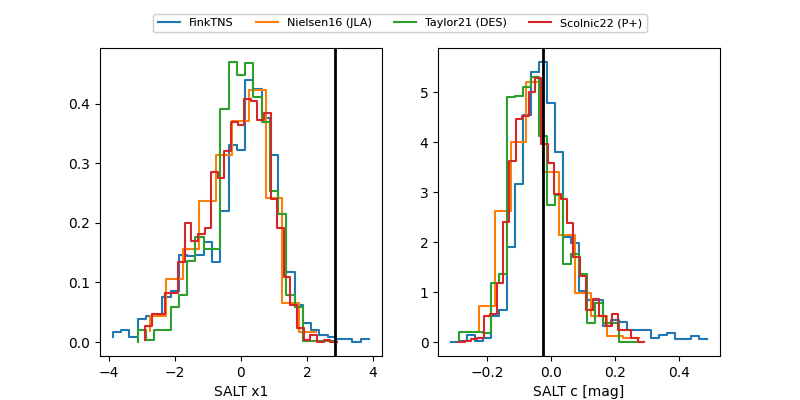

2025ahki
Target 2025ahki at 2025-12-20 14:49
Aliases and brokers:
FINK: fink-portal.org/ZTF25acibvls
Lasair: lasair-ztf.lsst.ac.uk/objects/ZTF25acibvls
ALeRCE: alerce.online/object/ZTF25acibvls
TNS: wis-tns.org/object/2025ahki
YSE: ziggy.ucolick.org/yse/transient_detail/2025ahki
alt names
ZTF25acibvls (ztf,fink_ztf)
2025ahki (tns,yse)
Coordinates:
equatorial (ra, dec) = 166.6354,+6.92101
equatorial (HMS+DMS) = 11:06:32.49,+06:55:15.64
galactic (l, b) = (247.1953,+57.94214)
Flags:
Photometry:
last ztfg=19.52, ztfr=19.64
2 ztfg, 1 ztfr detections
Lightcurve

Visibility


Additional plots
